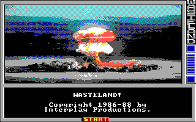

encodepic
With the encodepic program you can convert a standard image format file (like PNG, JPEG and BMP) to a Wasteland PIC file.
Without any parameters encodepic reads the input from stdin and writes it to stdout. With one parameter the image is read from the specified file and the output is written to stdout. If you specify two parameters then the input is read from the first file and the output is written to the second file. You can also specify a minus character ("-") as filename which also means reading from stdin or writing to stdout.
The number of colors and the color palette in the source image does not matter. The encodepic tool does it's best to reduce the colors and convert them into the standard CGA color palette Wasteland uses. But the color reduction algorithm isn't the best in the world so you may get better results when you convert the colors with a good image editor yourself before converting the image to a Wasteland PIC file.
Usage
encodepic [OPTION]... [INPUT [OUTPUT]]
Parameters
-d, --debug Shows stacktrace when an error occurs -h, --help Display help and exit -V, --version Display version and exit
Example
The following command uses the nuke.png in the current directory as input, converts it to a Wasteland PIC file and replaces the original title.pic of Wasteland with the created pic (At least when you have installed Wasteland in c:\wland\)
{kind=link}
encodepic nuke.png c:\wland\title.pic
When you now start the game then you are welcomed by this screen:
